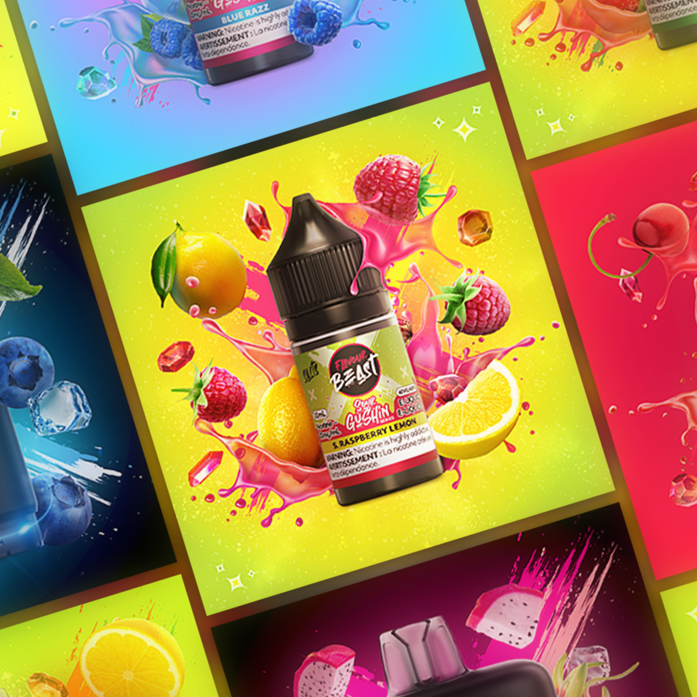
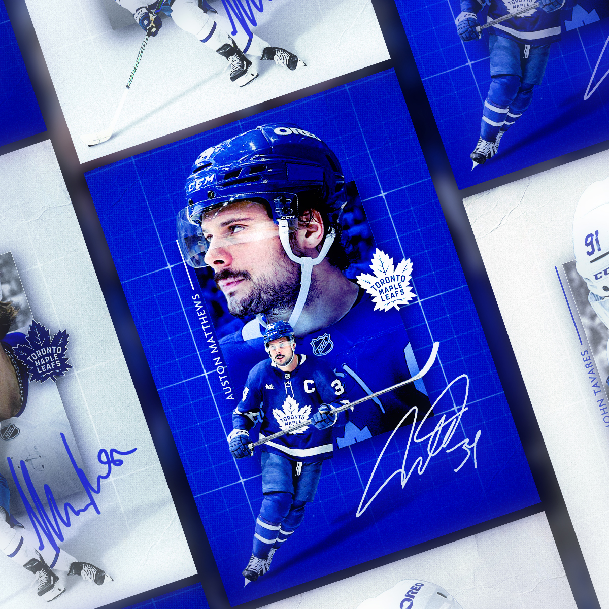
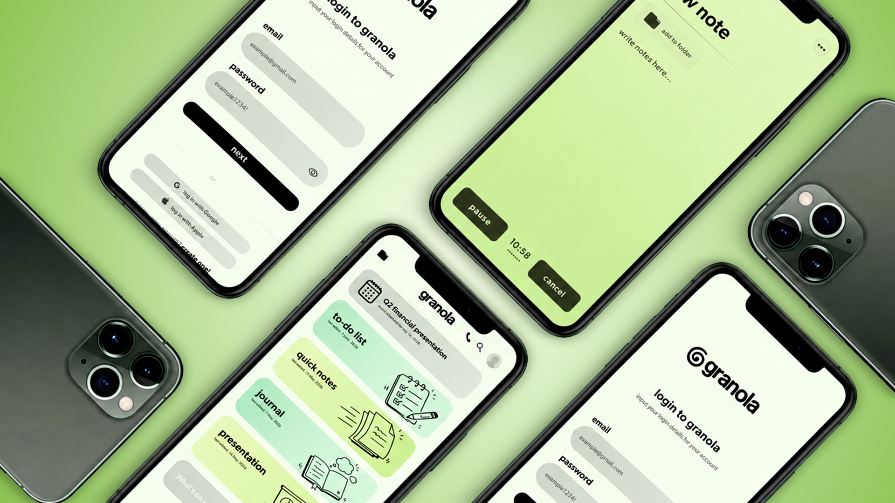

Andre Cristillo — Graphic Designer · Based in Canada
Designing with Purpose.
Creating with Passion.
I believe the best design balances purpose, creativity, and a sense of play.
(scroll)
I believe the best design balances purpose, creativity, and personality. My goal is to create thoughtful visual experiences that engage, inspire, and endure.
Whether I'm designing, playing sports, or gaming with friends, I enjoy bringing creativity, curiosity, and a positive mindset to everything I do.
Find out more →Commercial Product Renders
Commercial product renders enhanced through advanced photo manipulation and AI workflows.
View project ↗
Next-Generation Hockey Cards
Custom hockey cards that blend creativity with professional design. Each card is uniquely crafted and optimized for high-quality print production.
View project ↗
Rethinking Digital Identity
A complete brand and app refresh focused on creating a more approachable, engaging, and memorable user experience.
View project ↗
Ideate
Every project begins with research and inspiration. Through moodboards and visual exploration, I shape a creative direction that aligns with the project's goals.
Design
With Adobe Creative Suite at the core of my workflow, I craft refined visuals while using AI to elevate imagery, explore ideas, and streamline production.
Present
I bring each project to life with polished mockups and detailed case studies, showcasing not only the final outcome but the thinking behind every decision.